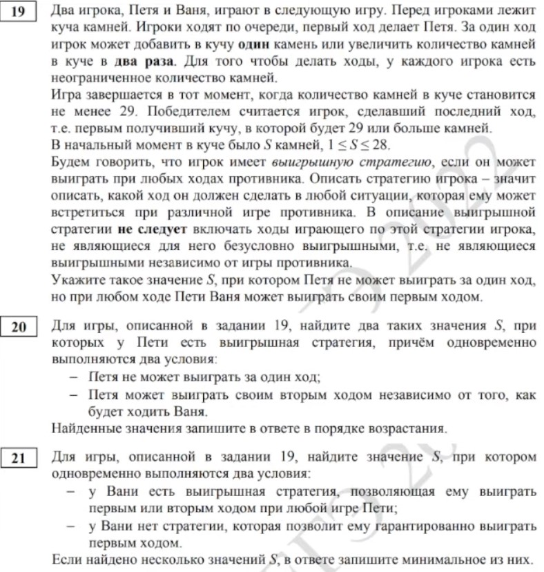
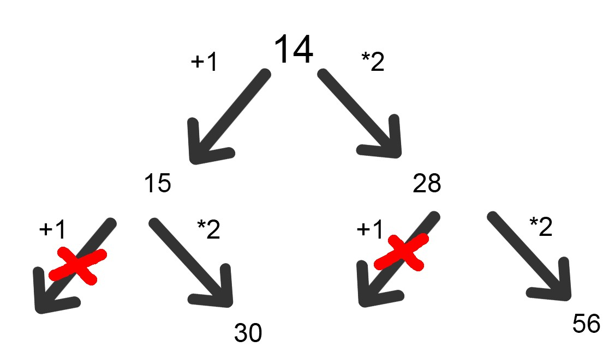
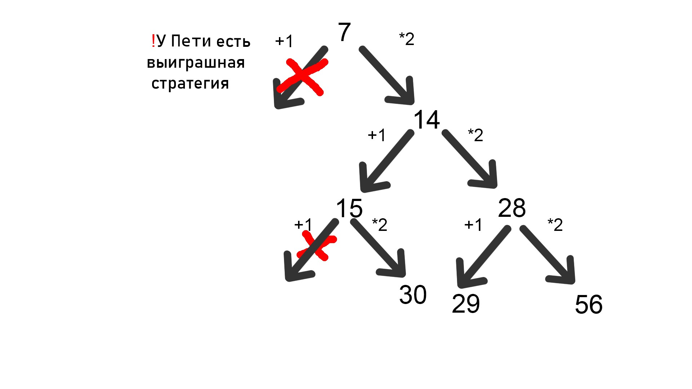
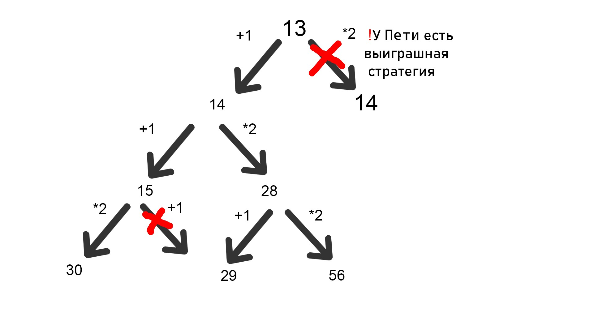
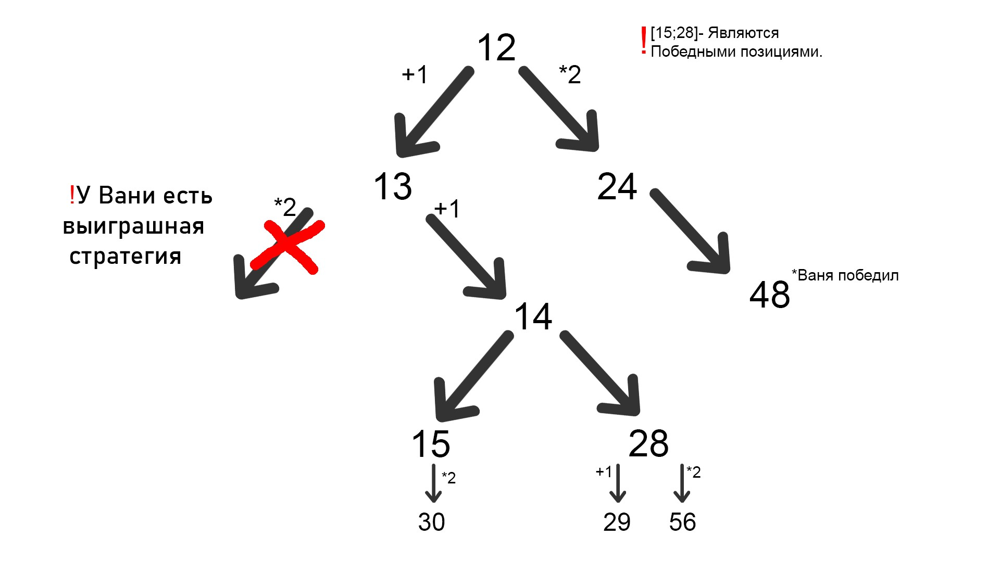

РАЗБОР ЗАДАНИЙ ЕГЭ 19-21 ПО ИНФОРМАТИКЕ
СПОСОБ РЕШЕНИЯ РУКАМИ

19. Ходы: +1; *2
Игра закончиться при S >=29 камней.
Давайте для начала возьмем S = 14. Что мы сможем сделать c начальным количеством? В какие позиции мы попадем?

При таком значение S, можно расписать всевозможные исходы игры. Очевидно, что первым ходом Петя не выиграет своим ходом, а своим первым ходом Ваня одержит победу (при любой игре Пети).
Ответ: 14.
20.Ходы: +1; *2
Игра закончиться при S >= 29 камней.
Нам нужно, чтобы после хода Пети, в куче осталось 14, так как из предыдущего задания мы знаем, что эта позиция будет выигрышной. Легко заметить, что в 14 мы можем попасть из 7 и 13(так как ходы +1 и *2).


Ответ: 13;7
21.Ходы: +1; *2
Игра закончиться при S >= 29 камней.
Очевидно, что, взяв изначальное число 12, Петя не сможет выиграть своим первым ходом,
А также он не сможет выиграть своим вторым ходом, поскольку не будет хватать камней.

Microsoft Excelmore_vert
Excelclose
В этой статье Вы узнаете, как можно решать задания 19-21 в Excel. Но перед этим настоятельно рекомендую ознокомиться со способом решения руками.
С++/Pythonmore_vert
С++/Pythonclose
В этой статье Вы узнаете, как можно решать задания 19-21 с помощью Кода. Но перед этим настоятельно рекомендую ознокомиться со способом решения в Excel и изучить специфику рекурсий.